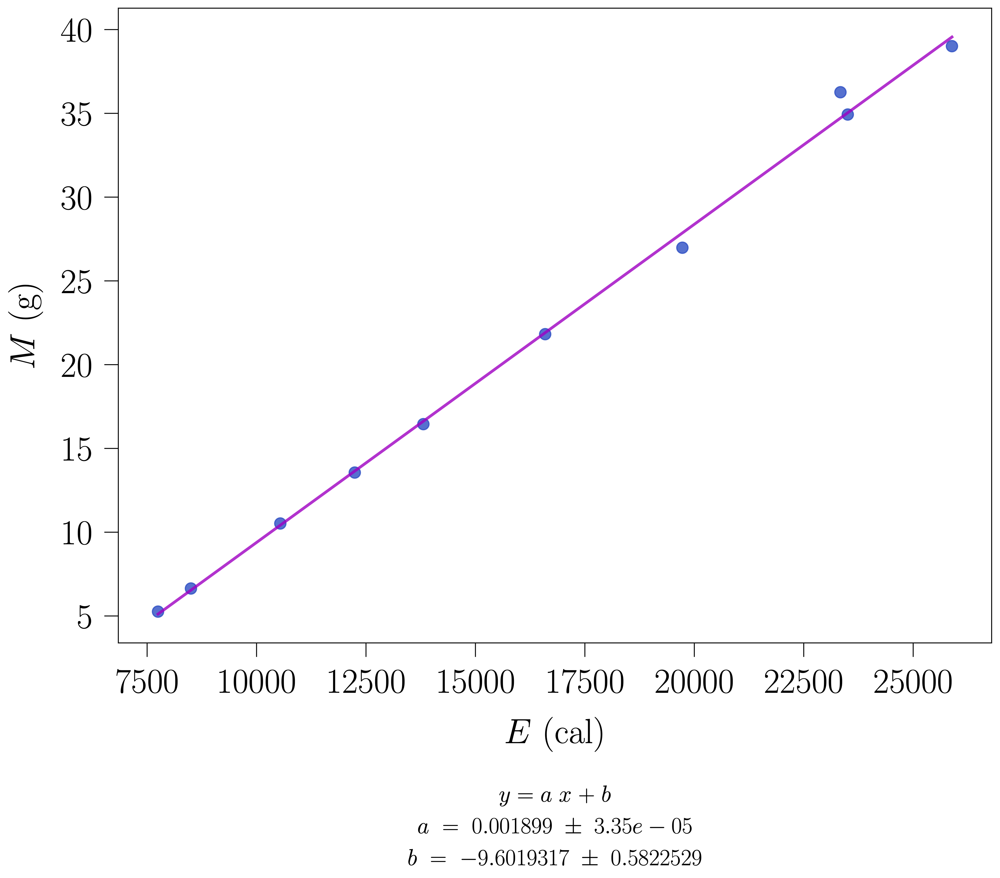
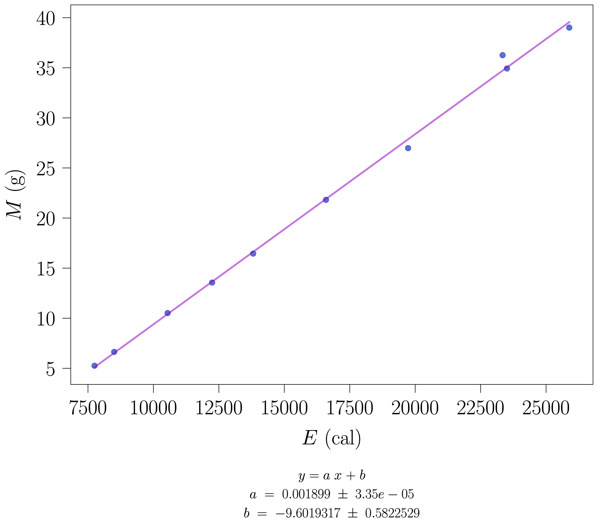
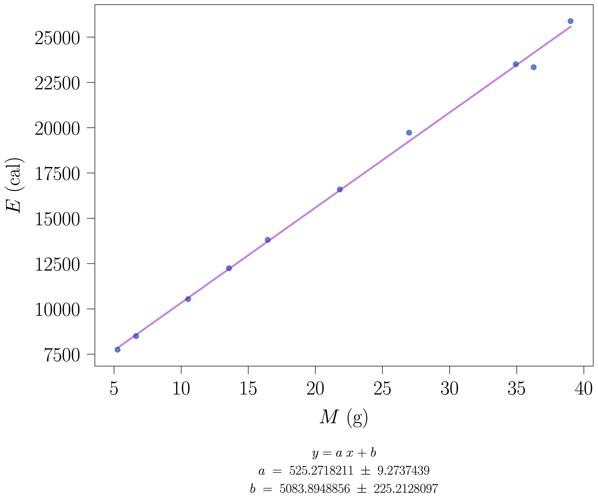
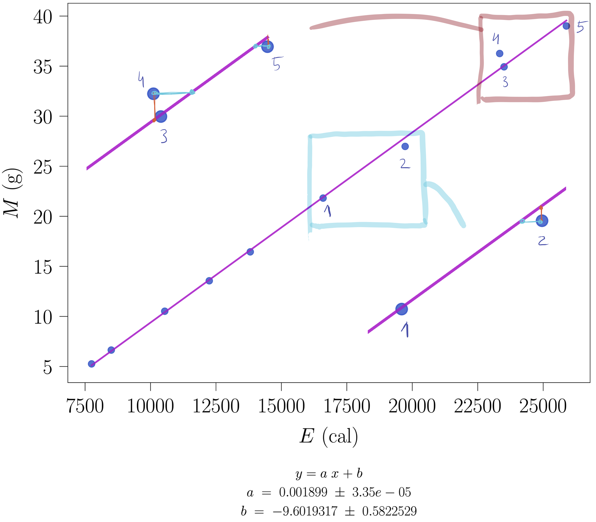
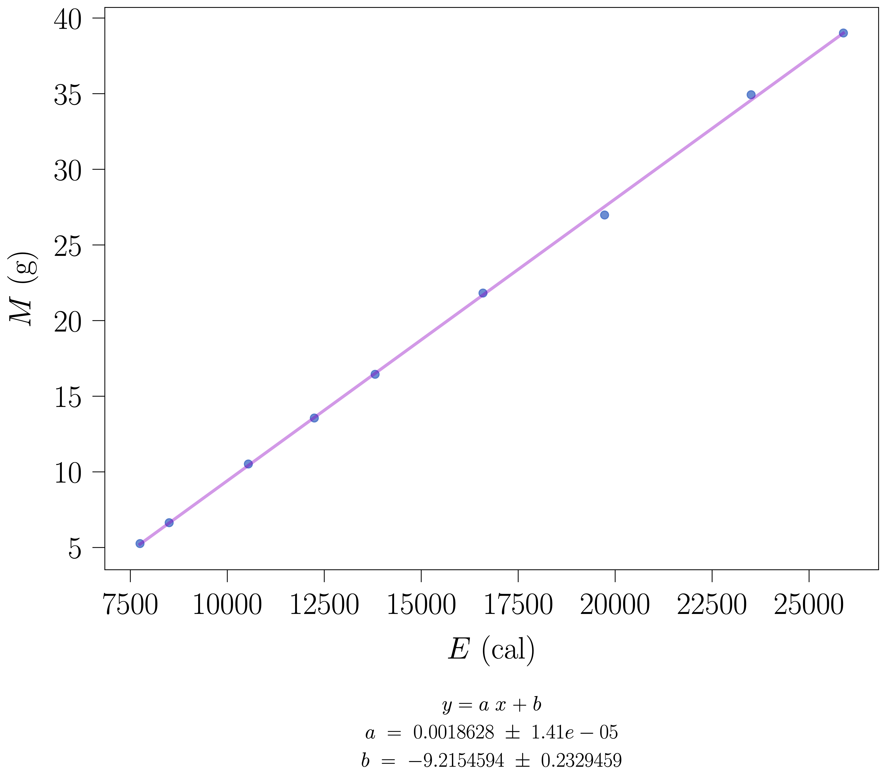
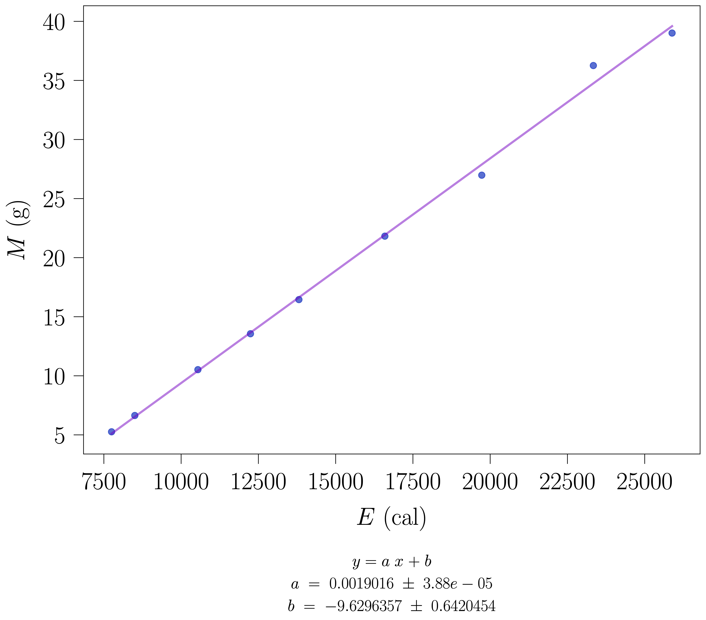
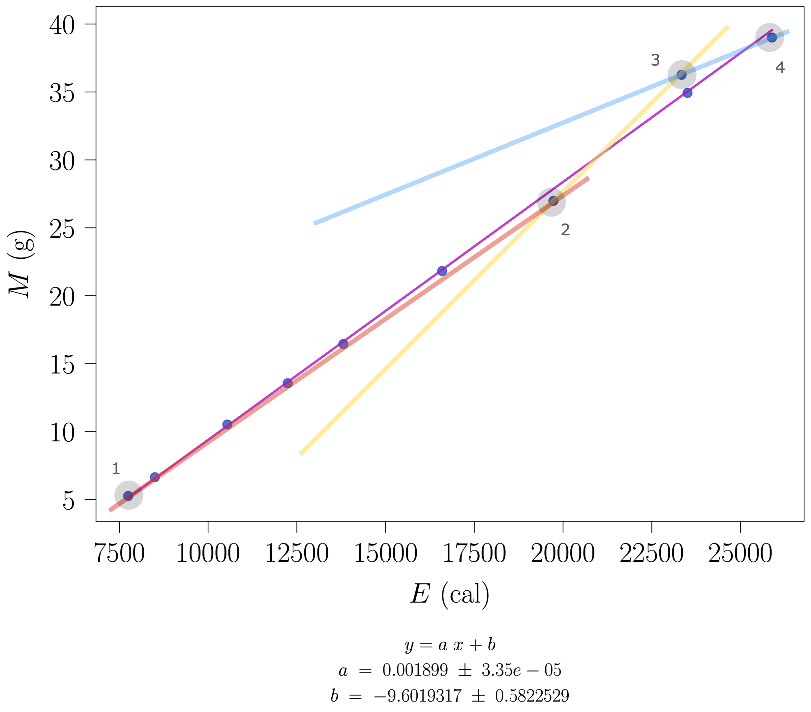

En resumenCalor latente de vaporización con un calorímetro eléctrico; ΔM frente a E; dos métodos comparados.
Calor de vaporización del agua
Prácticas de Laboratorio — UNED
Josu M. Igartua
2024-10-26
Resumen
Determinación experimental del calor latente de vaporización del agua mediante un calorímetro eléctrico y medida del flujo másico evaporado por unidad de tiempo.
Material
Equipo para crear el vapor de agua
Amperímetro
Voltímetro
Reostato
Crónometro
Vasos diversos
Balanza
Repaso de teoría
Transiciones de fase de primer orden
Fundamento teórico
Para provocar una transición de primer orden en un determinado sistema, se necesita aportar energía. A esa energía se le denomina calor latente. En esta práctica, el sistema es agua y la energía necesaria se conseguirá mediante una resistencia eléctrica, por la que se hará circular una corriente eléctrica I, mediante una diferencia de potencial V. De esta forma, la potencia que se suministrará al agua es: W=I\cdot V. Cuando la proceso de vaporización es estacionario y tras haber transcurrido un tiempo \tau, la energía aportada en condiciones ideales a M g de agua para vaporizarlos es: W\cdot \tau=M\cdot q, donde q es el calor de vaporización por gramo del agua y, M, la cantidad de agua vaporizada. De todas maneras, y debido a las pérdidas que se producen en el equipo experimental utilizado por una lado, y debido, por otro lado, a que no todo el agua vaporizada se recogerá, se necesita corregir la expresión anterior:
(W-P)\tau=(M+m)q
\tag{1}
En esa expresión, P representa las pérdidas por unidad de tiempo y, m, la cantidad de agua que no ha entrado en el condensador (y que por lo tanto no se recogerá). Para poder olvidarnos de ambas cantidades (indeterminadas), se puede utilizar el método de las diferencias. Esto es, se hacen dos mediciones distintas, cada una con una valor de la potencia diferente, y de la cantidad de agua condensada en cada caso, se puede determinar el valor de q de la siguiente manera:
(W_{1}-W_{2})\tau=(M_{1}-M_{2})q
\tag{2}
Método operatorio
Primer método
1
Pesa uno de los dos vasos: en éste vas a recoger el agua que vaporizes.
2
Fija un valor para la potencia: por ejemplo, fija el valor máximo en potenciómetro.
La diferencia de potencial correspondiente la leerás en el voltímetro que está fijo en la mesa, y la intensidad la medirás con el polímetro que está sobre la mesa.
3
Una vez de que se ha iniciado la vaporización, baja un poco el valor de la potencia suministrada, para controlar el proceso de vaporización, y hacer que sea más regular.
4
Pon en marcha el condensador y espera hasta que la condensación del agua sea regular.
5
Justo entonces, cambia el vaso que está recogiendo el agua hasta ese momento por el otro vaso (el que que has pesado) y al mismo tiempo pon en marcha el cronómetro.
6
Tras haber transcurrido el tiempo \tau, que hayas estimado oportuno para la toma de las medidas (6 minutos, 240 segundos, es un valor adecuado), para el cronómetro y sustituye, de nuevo, el vaso.
7
Pesa el vaso con el agua condensada, y por diferencia, obtén la cantidad de agua condensada (previamente vaporizada) con la potencia utilizada.
8
Repite los pasos anteriores para otro valor de la potencia: \frac{2}{3} del máximo, por ejemplo.
Segundo método
Todos los pasos descritos en el apartado anterior son también válidos en éste. Sin embargo, ahora, repite el procedimiento anterior para 10 valores de potencia diferentes.
Resultados
Obtén el calor de vaporización del agua.
El valor esperado para el calor de vaporización del agua es: \approx 530 cal/g.
Lo que hay que entregar:
1
Los resultados obtenidos utilizando los dos métodos
2
El ajuste por mínimos cuadrados de los resultados obtenidos mediante el segundo método:
1. Representación gráfica de los puntos experimentales y de los puntos de la regresión
Datos experimentales
A continuación en la tabla se resumen los datos recogidos en el laboratorio.
I\textrm{ (A)}
V\textrm{ (V)}
\operatorname{Pot}\textrm{ (W)}
E\textrm{ (cal)}
M\textrm{ (g)}
1.60
143.3
229.28
19727.72
26.98
1.45
133.0
192.85
16593.21
21.82
1.28
125.4
160.51
13810.78
16.45
1.21
117.6
142.30
12243.44
13.56
1.12
109.4
122.53
10542.56
10.52
1.00
98.8
98.80
8500.96
6.64
0.95
94.8
90.06
7748.95
5.26
1.66
163.4
271.24
23338.39
36.26
1.73
173.9
300.85
25885.50
39.01
1.63
167.6
273.19
23505.66
34.93
Representación gráfica: \Delta M vs E

1 comentario
Es interesante darse cuenta de lo siguiente. Al representar la cantidad de masa que se evapora y que se recoge en el vaso, M(\textrm{ m}), en función de la energía suministrada, E (en cualquier unidad), para evaporar esa cantidad de agua, en realidad, la ecuación que se está representando es:
M = \frac{1}{q}\cdot E
\tag{3}
ya que la definición de q es: la energía necesaria por unidad de masa para vaporizar el agua, E = q\cdot M. Esta claro que esta expresión representa una relación lineal entre la masa vaporizada y la energía necesaria para ello. Por supuesto, lo mismo ocurrirá en el caso de la ecuación Ecuación 3, también representa una relación lineal, como se ve en la figura. Es ésta la representación que hay que hacer, puesto que así es como se está haciendo el experimento: la variable sobre la que se tiene el control, la variable independiente, es la energía suministrada, con lo que deberá representarse en el eje de abcisas, OX; y la variable que se mide, la que no se controla, la variable dependiente, debe representarse en el eje de ordenadas, OY.
Entonces, la relación es lineal, pero la constante de proporcionalidad, la pendiente de la línea recta que representa la relación lineal no es ya la magnitud física que se está buscando: q, el calor latente de vaporización por unidad de masa, si no su inversa. Esto es importante, no solo para proporcionar el valor adecuado, si no su correspondiente error.
Para deducir el valor de q las ecuaciones que se tienen que comparar son las siguientes, por lo tanto:
Ecuación del problema físico: M = \frac{1}{q}\cdot E, la que da cuenta de la relación lineal esperada.
Ecuación del problema matemático: y = m\cdot x + n, la correspondiente a la regresión lineal que hay que aplicar a los datos experimentales.
En este caso concreto, a la recta que representa el problema físico le corresponde una ordenada en el origen nula. Claramente debe ser así, ya que si no se suministra energía no se recoge agua. Esto es lo que indica la ecuación del punto 1., en la que no aparece el término constante en el polinomio de grado 1.
Sin embargo, la ecuación del problema matemático, en principio, sí consta de término constante. Será la regresión lineal la que deduzca que su valor es nulo o que tiene un valor más pequeño que el valor de su correspondiente error, lo que significa que mediante la precisión del experimento (el error) solo se puede asegurar que la ordenada en el origen es nula.
Con todo lo dicho, el valor obtenido para q es:
q = \frac{1}{m}
Y su correspondiente error se calcula teniendo en cuenta que q=q(m) es una función de una variable, por lo que el erro viene dado por la siguiente expresión:
\Delta q = \sqrt{ \left|\frac{\partial q}{\partial m}\right|^{2}\cdot \left| \Delta m \right|^{2} }\Rightarrow
\Delta q = \left|\frac{\partial q}{\partial m}\right|\cdot \left| \Delta m \right| \Rightarrow
\boxed{ \Delta q = \left|\left(\frac{-1}{m^{2}}\right)\right| \cdot \left| \Delta m \right| }
Finalmente, el valor de q será:
\boxed{q = \frac{1}{m} \pm \left|\left(\frac{-1}{m^{2}}\right)\right| \cdot \left| \Delta m \right| }
q \approx 526.593 \pm 9.289 cal/g
2 comentario
También es muy interesante darse cuenta de que la manera de representar los datos influye en los valores de las magnitudes que se deducen de los mismos. En el primer comentario, entre otras cosas, se ha indicado la necesidad de representar los datos de acuerdo a cómo se ha hecho el experimento. Esto es, colocando la variable independiente en el eje de abcisas y, la dependiente, en el de ordenadas. Para el experimento de esta práctica, significa, como se ha indicado, que q es el inverso de la pendiente. Así, si se hubieran representado los datos al revés, la variable independiente en el eje de ordenadas y, la dependiente, en el de abcisas, se aseguraría que el valor buscado q es directamente la pendiente de la recta obtenida mediante la regresión lineal.
Sin embargo, hay que tener en cuenta qué hace realmente la regresión lineal. Esencialmente, minimiza una distancia generalizada definida como la raíz cuadrada de una suma de distancias al cuadrado.
Lo interesante ahora es darse cuenta de la interpretación gráfica de esa suma de distancias.
Comparación
M vs. E
E vs. M


q = \frac{1}{m} \pm \left|\left(\frac{-1}{m^{2}}\right)\right| \cdot \left| \Delta m \right|
q = m \pm \left| \Delta m \right|
q = m \pm \left| \Delta m \right|
q = 525.272 \pm 9.274
En la siguiente figura se ha insertado dos zonas detalladas, para se se aprecie qué distancias se suman, para luego minimizar, en el proceso de aplicar la regresión lineal, intercambiando las variables.

En rojo, se indican las distancias que se minimizan al representar M vs. E, que es como se ha realizado el experimento; en naranja, se indican las distancias que se minimizan al representar E vs. M. Cuidado, porque estas distancias en naranja son solo una indicación, no son las que se minimizan de verdad, porque, en realidad, la línea representada se corresponde a la regresión lineal aplicada sobre M vs. E.
3 comentario
Otro aspecto interesante a tener en cuenta es contar con la posibilidad de observar el efecto que tiene quitar puntos experimentales. No por el hecho de quitar los puntos medidos, que no es ético, si es que el experimento se ha hecho como hay que hacerlo, si no por ver si sería conveniente volver a medir algún punto, puesto que desvía excesivamente el valor obtenido para la magnitud del valor esperado y por deducir, en ese caso, cuál es el origen de haber medido mal ese punto.
Este podría ser el caso del punto (23338.39, 36.26), si se quita, el resultado de la regresión lineal se recoge en la siguiente figura:

Como puede observarse, el valor obtenido para la pendiente, m=0.0018628, es menor que el obtenido si se tienen en cuenta todos los puntos experimentales. Como ya se ha visto, al ser q el inverso de m, si m decrece, como es el caso, q crece, y pasa de q= \frac{1}{0.001899}= a ser q=\frac{1}{0.0018628}=536.826; que se aleja más del valor esperado.
Se podría estudiar el efecto de quitar el punto (23505.66,34.93), lo que da lugar a la siguiente regresión lineal:

Esta vez, la pendiente crece: m=0.0019016, con lo que su inverso decrecerá: q=\frac{1}{m}= 525.873.
En cualquier caso, será el experimentador quien decida qué hacer en cada momento.
2. Pendiente y su error; ordenada en el origen y su error
3
Valor del calor (latente) de vaporización del agua
Comentario sobre los dos métodos y sobre lo que hay que entregar
La manera en la que está planteado el método operatorio en esta práctica refleja muy claramente el porqué de utilizar la regresión lineal, por un lado; y, por otro, lo que significa groso modo aplicar la regresión lineal.
El método operatorio plantea usar dos métodos para obtener experimentalmente el valor de q. En el primero, se toman dos únicos puntos experimentales, \left(E,M\right) y con el denominado método de las diferencias se obtiene q. Hay que darse cuenta de que el método de las diferencias no es si no el cálculo de la pendiente de la recta que une los dos puntos. Esto es, al calcular el cociente indicado por la Ecuación 2, se están tomando 2 puntos experimentales, en principio cualesquiera, del total de 10 y solo con esos dos se calcula q, como se indica en la figura.

Está claro que con cada pareja de puntos que se elija de entre los 10 puntos experimentales medidos, el valor de q que se obtiene es diferente.
Referencias
Tipler, P. A. y Mosca, G., Física para la ciencia y la tecnología, Vol. 1, Ed. Reverté. Capítulo sobre temperatura, calor y transiciones de fase.
Serway, R. A. y Jewett, J. W., Física para ciencias e ingeniería, Vol. 1, Cengage Learning. Capítulo sobre calor latente y cambios de fase.
Alonso, M. y Finn, E. J., Física, Vol. 1: Mecánica, Addison-Wesley (capítulos termodinámicos).